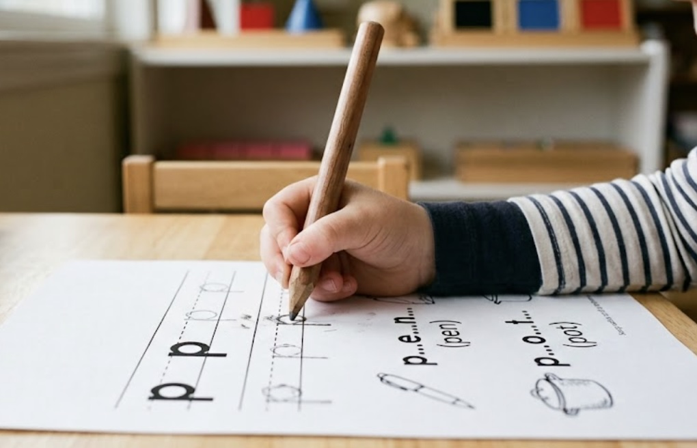
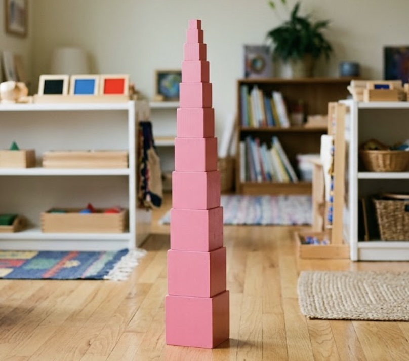
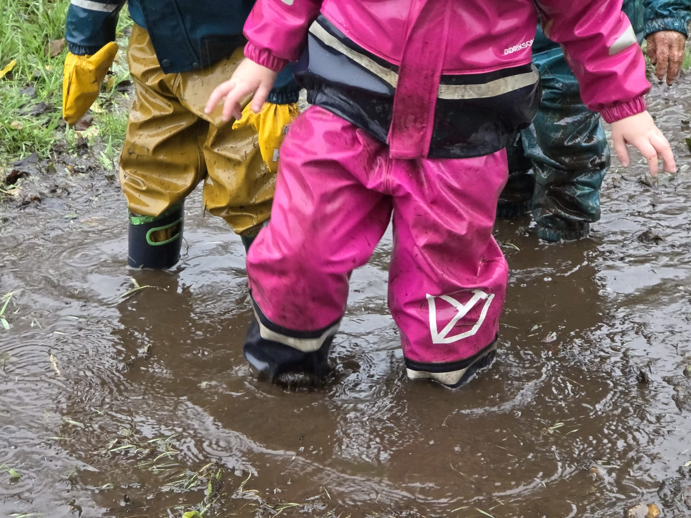
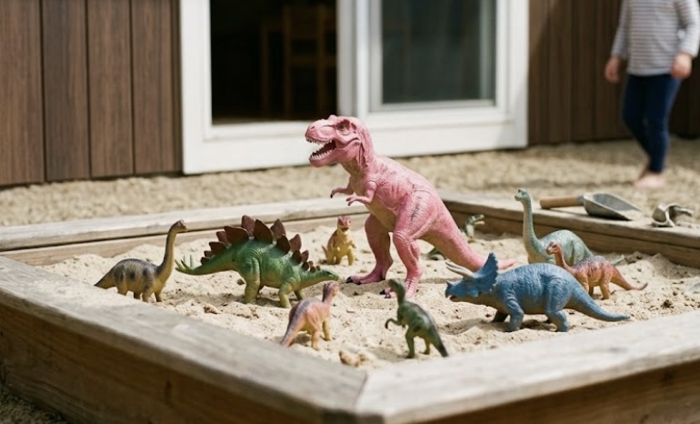

Making sense of the labels
Educational approaches, in plain language
Programs describe their approach in all kinds of ways. Here's what the common ones actually mean day to day.
While it isn't a philosophy itself, every early learning program in British Columbia — whatever its care type or educational approach — is guided by the BC Early Learning Framework (BCELF). Programs aren't required to use it; if a program doesn't, you may want to ask what learning framework or curriculum it uses instead.

Academic / kindergarten prep
These programs run more like a junior classroom. Days are structured around adult-led instruction, with an explicit focus on early literacy and numeracy — letters, sounds, counting, writing — often using a set curriculum, circle-time lessons, themed units, and take-home work or worksheets.
The stated goal is usually to prepare children for academic learning in kindergarten and give them visible, measurable skills before they start school. This appeals to families who want clear evidence their child is "getting ahead."
Blended / mixed-philosophy
Many child care programs draw deliberately on more than one approach rather than following a single method. A blended program might, for example, use Montessori-style practical-life materials and self-directed work periods alongside emergent, inquiry-based projects; pair a play-based core with a structured literacy or numeracy component; or run a Reggio-inspired documentation practice inside a play-based program.
Mixed-philosophy is what a great many licensed programs genuinely are, and a thoughtfully blended program can be excellent. What distinguishes a strong one is intentionality: its educators can explain why they draw on each approach, what they take from it and what they leave, and how the pieces fit together for the children in front of them.

Montessori
Montessori centres on a carefully "prepared environment": low shelves of purpose-built, self-correcting materials that children choose freely and work with at their own pace, usually in mixed-age groups (e.g. 3–6 together). The emphasis is on independence, concentration, order, and practical life skills — pouring, buttoning, caring for the space — as much as early literacy and numeracy. Educators tend to guide quietly rather than lead from the front.
One thing worth knowing: "Montessori" is not a protected or trademarked term, so programs vary widely in how closely they follow the method. There are two main lineages — AMI (Association Montessori Internationale) and AMS (American Montessori Society). AMI is traditional and strict, heavily standardized around the classic presentation techniques; AMS combines classic Montessori approaches with contemporary educational research. A Montessori educator who holds an AMI or AMS certificate will have completed a full-time year of training specifically in the Montessori method.

Outdoor-based / nature school / forest school
These programs treat the outdoors as the primary learning environment rather than a break from it. Children spend most or all of the day outside — in forests, parks, beaches, gardens or naturalized play spaces — in nearly all weather, and the curriculum emerges from what the place offers that day: seasons, weather, plants and animals, loose natural materials, and children's own questions about them. Programs may or may not have an indoor facility; if a program doesn't have one it may not be a licensed child care program, as currently only programs with a physical location and address can be licensed.
Educators typically emphasize sustained unstructured play, child-led inquiry, and supported risk-taking — climbing, tool use, rough ground — with the aim of building physical competence and judgment alongside a connection to place. Many programs also work with local Indigenous communities and incorporate local knowledge of the land.
It's common to find outdoor-based programs that also work within another approach, such as Reggio or play-based.

Play-based
A play-based child care program is a child-centred environment where children learn naturally through hands-on exploration, imagination, and social interaction rather than academic instruction.
The classroom is intentionally divided into inviting interest areas — dramatic play spaces, building and block stations, sensory water and sand tables, art studios, and quiet reading nooks. Rather than following teacher-led or teacher-determined activities, children have long, uninterrupted blocks of time to choose from the materials on offer, driven by their own curiosity — whether that means constructing complex towers, pretending to run a neighbourhood grocery store, or mixing colours with paint.
Reggio Emilia–inspired
Reggio-inspired programs see the child as capable, curious, and full of ideas — and the classroom environment as a "third teacher" alongside the educators and the family.
Instead of a fixed lesson plan or monthly themes, learning unfolds through long-running, child-led projects that can stretch over weeks or months. Classrooms offer open-ended natural materials and many materials supporting communication and expression — drawing, building, movement, clay, light and shadow (Malaguzzi called these the "hundred languages of children"). Educators observe closely and document children's thinking — photos, notes, and children's work displayed on the walls, in booklets, in online apps and more — then revisit it with the children to deepen the inquiry.
There is no official training for Reggio-inspired programs beyond the workshops offered in Italy and what the Vancouver Reggio Association brings to the Lower Mainland. There is no certification for a program to be "Reggio"; the term is not protected or trademarked, so programs vary widely in how closely they follow the method.
Waldorf (Steiner)
Waldorf early childhood programs are built around rhythm, imitation, and imaginative play. The day, week and year follow a predictable rhythm — the same songs, stories, meals and transitions in the same order — on the understanding that young children settle and learn through repetition rather than instruction. Rooms are typically warm and homelike rather than classroom-like, with simple open-ended toys made from wood, wool and cloth, and few or no images fixed in detail, so children supply the rest imaginatively.
Educators model purposeful work — baking, mending, gardening, tidying — and children join in and imitate rather than being formally taught. Oral storytelling, singing, watercolour painting, handwork and daily outdoor time are central, and screens are generally absent at the program and, in many cases, discouraged at home. Formal academics are deliberately deferred: reading and writing instruction is not introduced in the early years, on the view that children's energies are better spent on play, movement and language first.